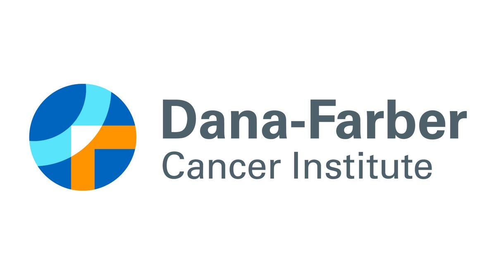
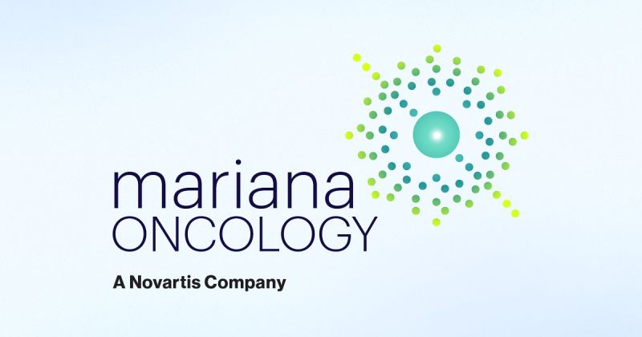
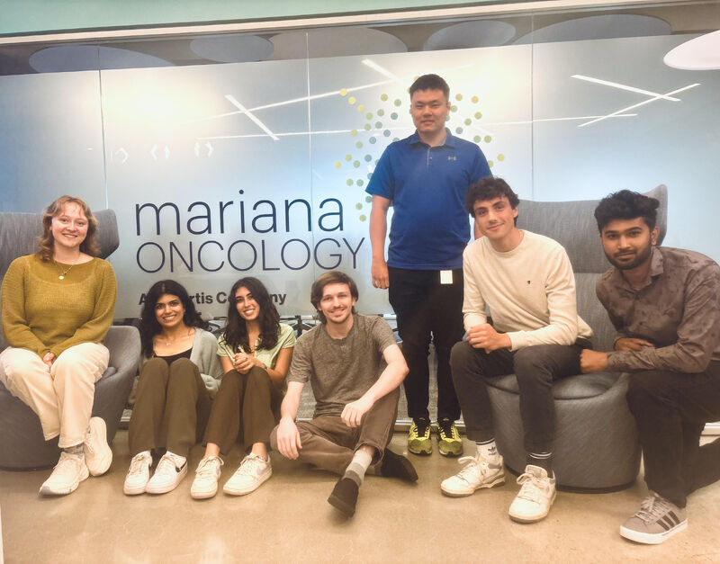

Research, teaching, and industry roles in radiopharmacology, cancer biology, and data-driven scientific analysis.
Professional Experience
July 2026 – December 2026
Lyn Jones Lab — Dana-Farber Cancer Institute
Boston, MA

Conduct experimental research in a chemical biology laboratory investigating approaches to expand the druggable proteome, supporting protein biochemistry and other molecular biology workflows
Apply computational and network-based analysis to investigate relationships between candidate druggable genes and Mendelian disease genes associated with mitochondrial DNA depletion syndrome
Integrate information from biological databases and enrichment analyses to explore gene connectivity, disease-associated mechanisms, phenotypes, and potential therapeutic relevance
Develop visualizations and structured analyses to communicate biological relationships and support hypothesis generation and research questions
July 2025 – December 2025
Radiopharmacology — Mariana Oncology
Watertown, MA

Developed and optimized radiopharmaceutical protocols to assess radioligand efficacy in tumor models
Executed tissue imaging analyses using ImageJ, QuPath (Random Forests), and Python-based scripts to classify and interpret tumor microenvironment features
Analyzed multimodal imaging and assay data to evaluate therapeutic performance and inform protocol iteration
Performed experimental validation using flow cytometry, HPLC, and JESS western blot to quantify target expression and therapeutic response
Presented experimental findings and data-driven insights to support next-step development decisions

Teaching & Mentorship
January 2026 – April 2026
Teaching Assistant — DS4200
Khoury College of Computer Sciences · Information Visualization & Presentation
Support students by covering data visualization principles, visual encodings, and interactive design using Python, R, JavaScript, HTML/CSS, and tools such as Tableau and Excel
Hold weekly office hours to guide students through programming assignments and debugging in libraries including Altair, D3.js, and Matplotlib
Evaluate and provide detailed feedback on homework submissions focused on visualization design, data analysis, and written technical communication
August 2024 – December 2024
Service-Learning Teaching Assistant — BIOL2299
Community-Engaged Teaching and Research & College of Science · Inquiries in Biological Sciences
Collaborated with community centers (826 Boston & Yawkey Club of Roxbury) to enhance STEM learning
Facilitated weekly experiential learning opportunities for first-year students in a STEM tutoring program
Assisted students with their Environmental Health Research Poster presentations and scientific communication skills